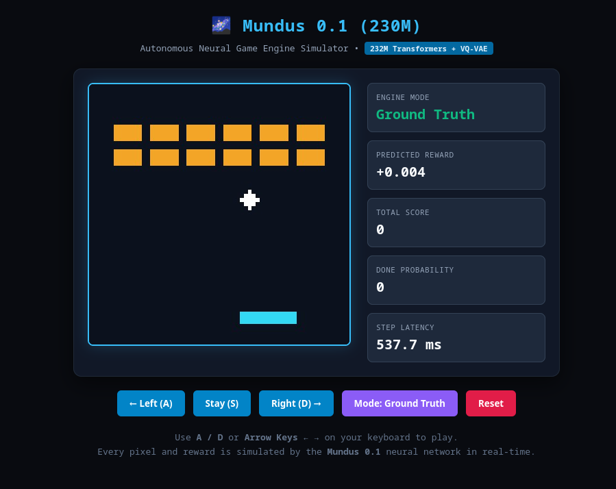
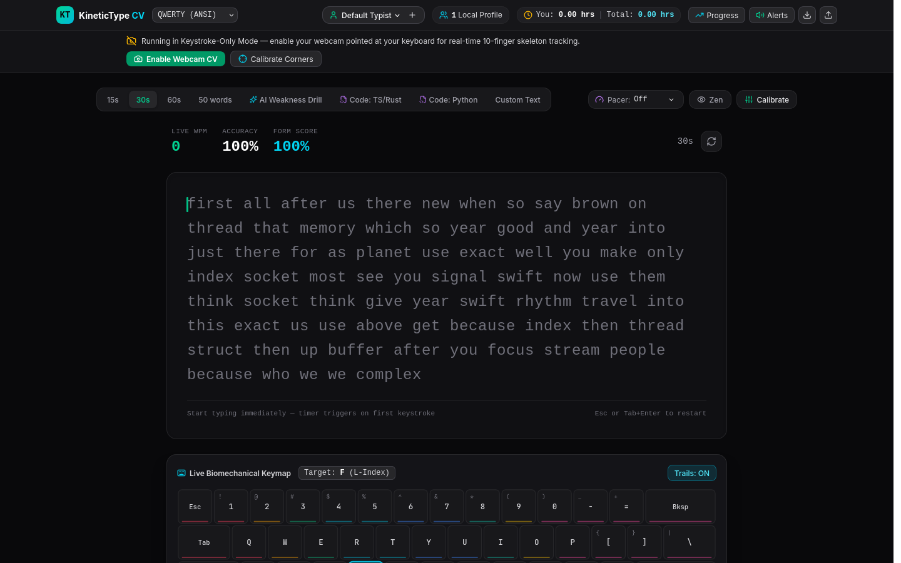
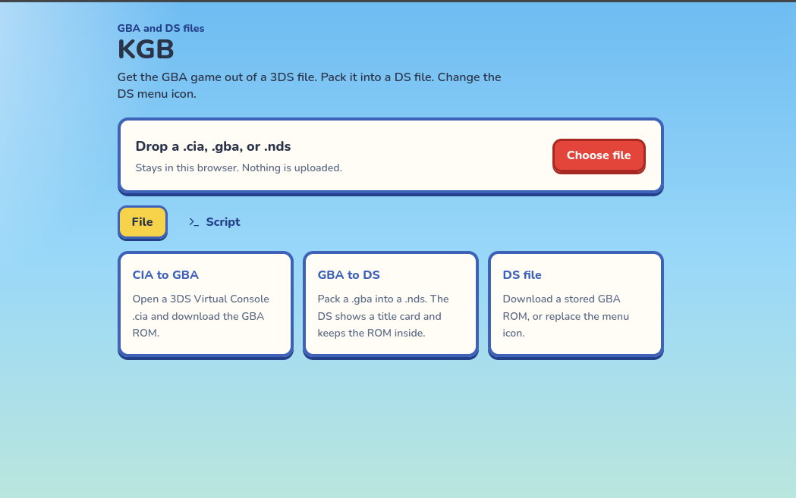

Mundus plays a game it imagines
A 230M transformer world model that generates every frame and reward of a game with no game engine underneath.
Python, PyTorch, VQ-VAE
I'm Mohamed Taha Enasraoui, a math and computer science student at FSR Rabat. I write ML internals and low-level systems from first principles, in Python, C++ and Rust.
I trained the model, then wrote a standalone engine with AVX2 and OpenMP kernels. KV-cache rollback is a pointer rewind instead of a tensor copy, which makes it 418× faster than PyTorch. Outputs match PyTorch exactly.
| Metric | PyTorch | C++ engine | Speedup |
|---|---|---|---|
| KV-cache rollback | 88.93 µs | 0.21 µs | 418.0× |
| Model load | 1,200 ms | 68.87 ms | 17.4× |
| Draft latency, k = 1 | 26.34 ms | 23.82 ms | 1.11× |
| Draft latency, k = 4 | 114.70 ms | 96.12 ms | 1.19× |
| Draft latency, k = 5 | 145.65 ms | 117.64 ms | 1.24× |
| Cosine similarity to PyTorch | 1.000000 | 1.000000 | exact |
Model load time for PyTorch is approximate. Full benchmarks and method are in the repository README.

A 230M transformer world model that generates every frame and reward of a game with no game engine underneath.

A typing coach that tracks all ten fingers at 60 FPS through your webcam and drills the keys you get wrong.

Extracts ROMs from Virtual Console CIA files and packs them for the DS, entirely in your browser. Nothing is uploaded.
Search by name or filter by language.
I'm most useful where ML meets systems: training, inference, performance work. Email is the fastest way to reach me.